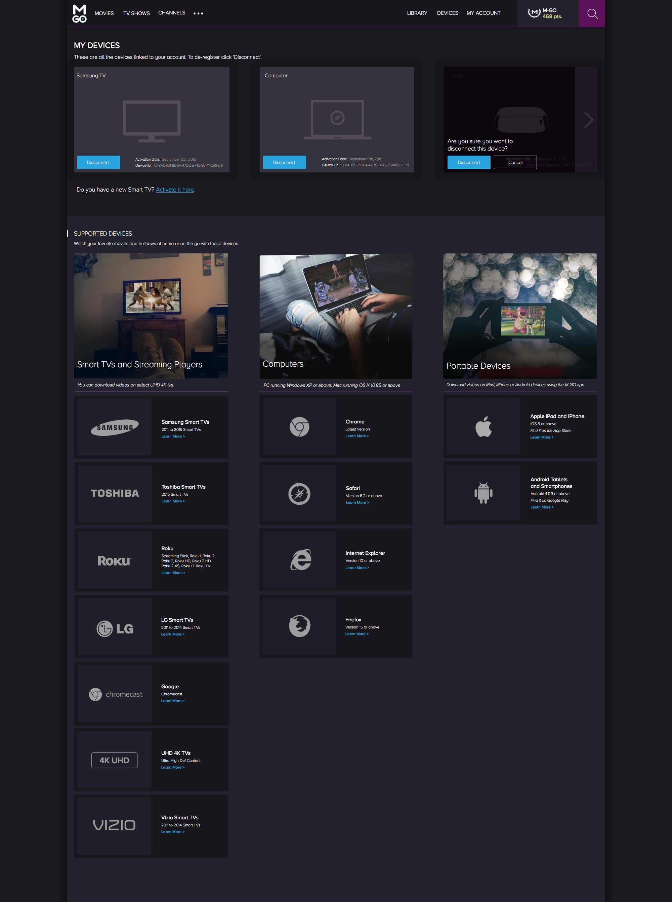
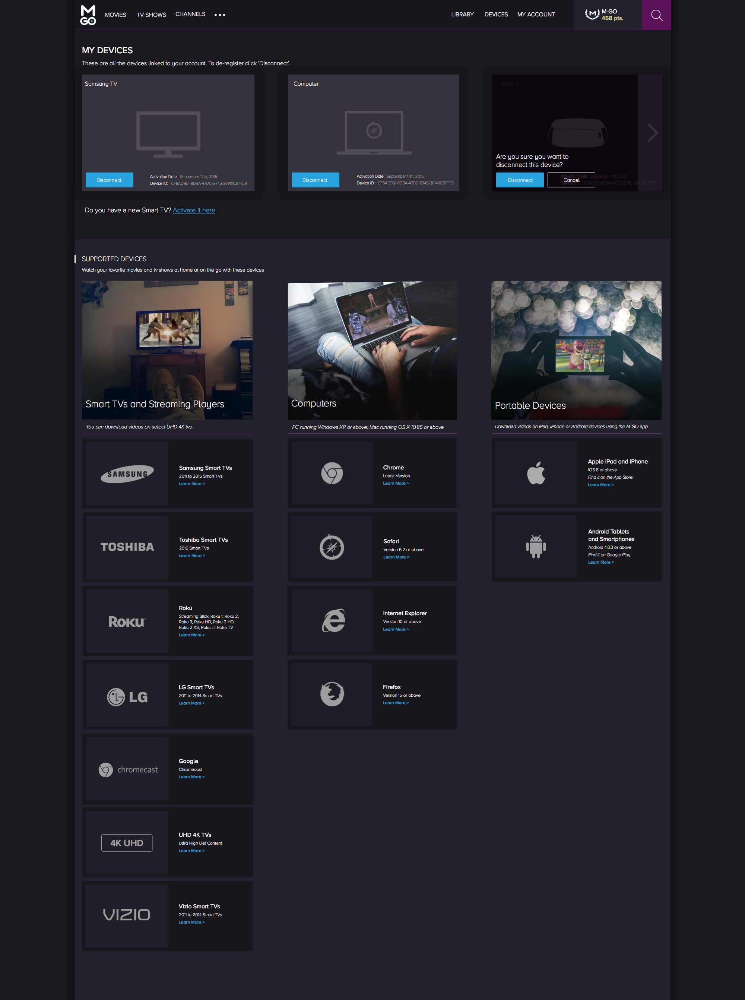

Working at M-GO
I work on the web design team at M-GO where we focus on UI and UX Design for desktop and mobile. When I started my job, our company began a rebuilding phase and my boss thought it was a fun idea to create avatars of our co-workers...kind of like a welcome gift. Below are a few illustrations of the Content Ops team who wanted their avatars to be based off the popular late 70s movie 'Alien'!

Brand Guide Lines
Working on the brand guidelines was the first major project I was involved in at M-GO and it was also our first initiative for Design 3.0, a design overhaul of our website. The site was originally designed with various colors and many different font sizes so over time it became difficult for developers to maintain code consistency. Our goal was to define reusable components that would not only look familiar to our iOS and Android products, but fit with the direction and feel we wanted to go in.

Design 3.0
After developing a solid foundation of fonts, button sizes and colors, we divided different sections of the site to work on. The main objective was to make the site look more modern while educating users about differences from other entertainment choices.
 Our previous navigation was cluttered with icons and text while our hero image assumed that new users understood what M-GO was about.
Our previous navigation was cluttered with icons and text while our hero image assumed that new users understood what M-GO was about.
 Through out the redesigned site, elements have more white space, we used a grid system and our home page showed considerably less content. The Rewards icon is also more prominent to peak the curiousity of one of our biggest differentiators.
Through out the redesigned site, elements have more white space, we used a grid system and our home page showed considerably less content. The Rewards icon is also more prominent to peak the curiousity of one of our biggest differentiators.
Front End Development and Design
Since the beginning of Design 3.0, I've updated the code for a couple pages of the M-GO website such as the hdr page. One of my most recent designs that went live was the devices page and . I experimented with parallax scrolling in order to explore concepts for promotional pages and I've continued to work on the UI Design for multiple pages of our platform as we progress.
I personally think interaction design and animation will continue to grow in order to educate users how to use products especially with material design becoming more prevalent. So I've dabbled with animations using jQuery, GSAP, CSS and javascript to get ready for the next wave of tech. Although I don't consider my self a javascript ninja yet, it is an area where I'd like to continue growing along with my design skill set. You can checkout my Codepen experiments like this or see some of my recent work below that shows before and after designs of current and future web pages.
 Our current settings page uses multiple drop down menus and this is something we wanted to change.
Our current settings page uses multiple drop down menus and this is something we wanted to change.
 The revised settings page uses a panel styled lay out that allows for scannable content.
The revised settings page uses a panel styled lay out that allows for scannable content.
 

 Back to Home Page
Back to Home Page